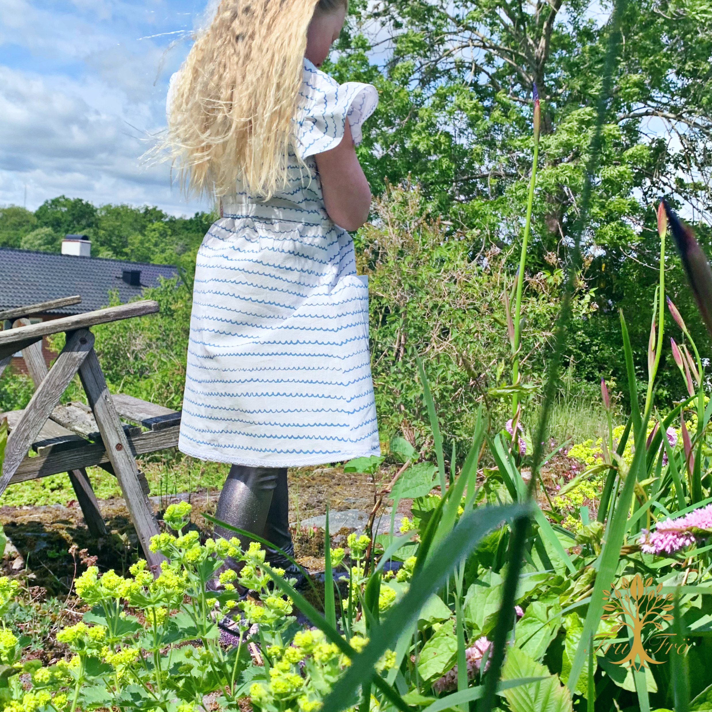
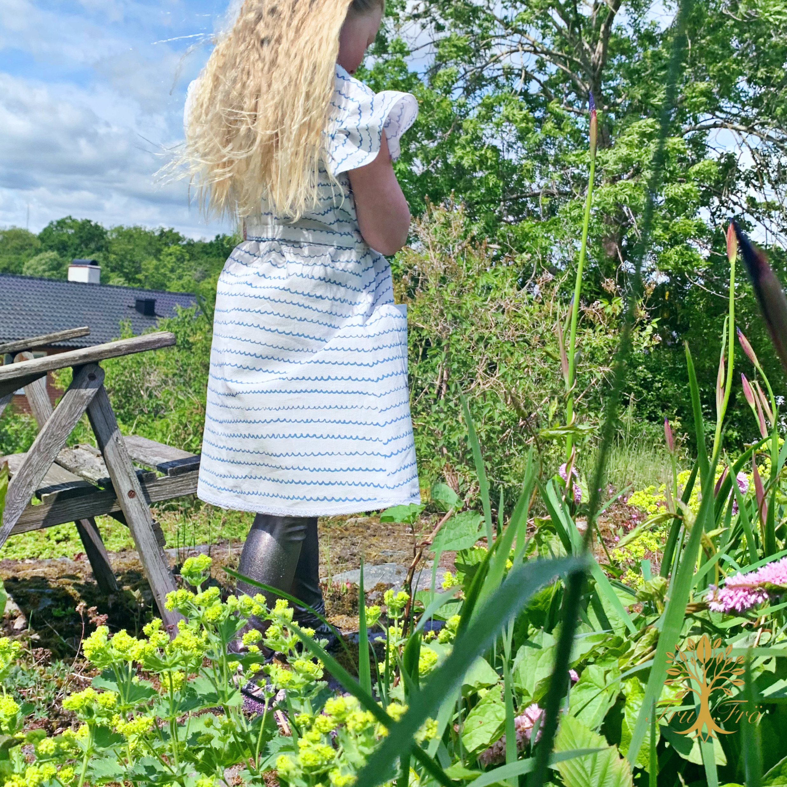
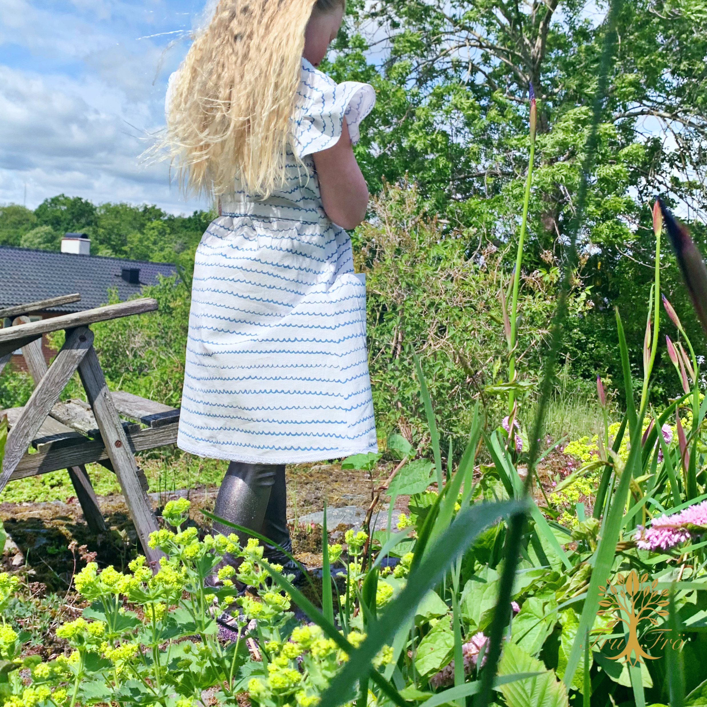
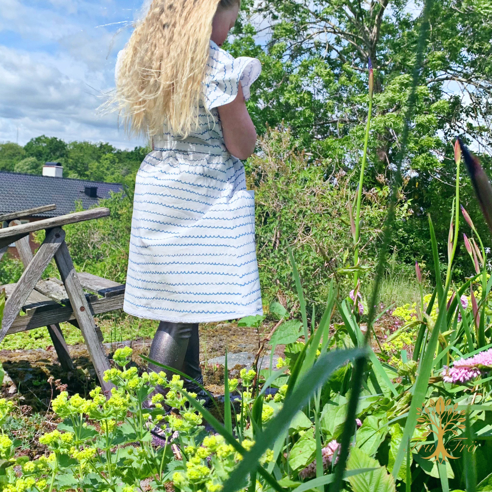

Mina Alster
Sommarklänningen ”VERA”

 


Luftig och somrig klänning sydd av återbrukade gardiner, med vackra detaljer och sköna färger. Helt unik och handgjord!
 

Luftig och somrig klänning sydd av återbrukade gardiner, med vackra detaljer och sköna färger. Helt unik och handgjord!